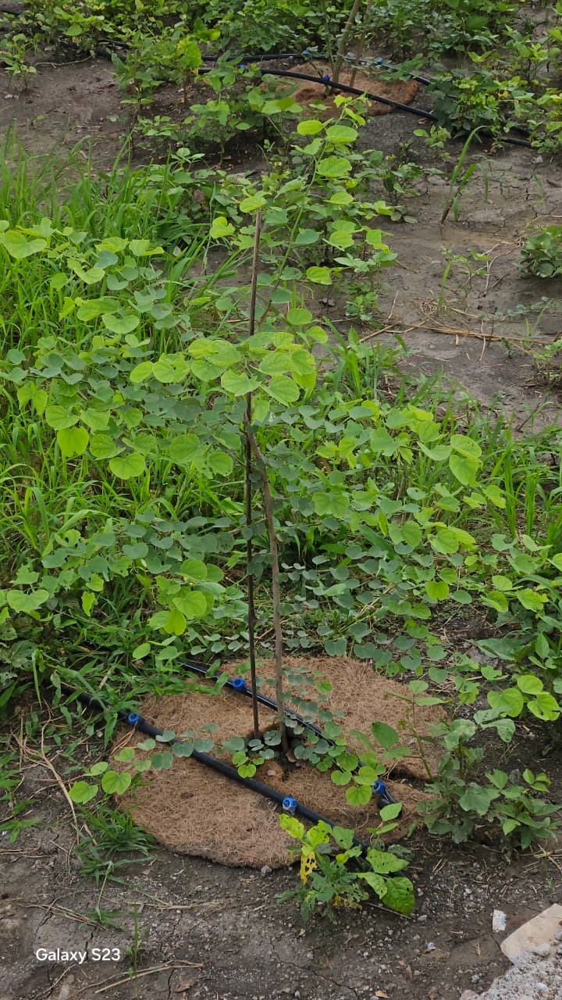

What this visit is about
This isn't a polished agritourism site. Kovana Natural Farm is a working permaculture farm in Khedli Pandya, just outside Kota. When you visit, you'll walk the land with someone who tends it daily, see the real state of things — good, growing, or still taking shape — and leave with a clearer sense of what natural farming actually looks like in Rajasthan's soil and climate.
We want you to arrive with the right expectations, because the best visits happen when you come curious rather than looking for a manicured showpiece.
What you'll see
Most of our food forest is only one to two years old. That means you'll see young trees, not a canopy — saplings gaining height, learning to hold their own against the heat, beginning to bear in some cases. A mature food forest takes a decade. You're seeing the early years of one.
Native tree species
Neem, moringa, and indigenous trees that belong to this land — building shade, habitat, and deep-rooted resilience.
Food forest saplings
Guava, pomegranate, banana, and more — young plants, 1–2 years old, laid out in a multi-layered planting pattern.
The farm pond
Our rainwater-harvesting pond — unlined, so it also recharges the groundwater under the neighbourhood.
Mulched ground
Straw, fallen leaves, coir rings, living ground cover. The soil is never bare — you'll see why, in person.

Your 20-minute tour
Our farm supervisor (Kisan Mitra) walks you through the farm and explains what we do and — more importantly — why. It's short enough that children stay engaged, and long enough to genuinely understand the system.
-
Why natural farming?
The core idea: work with the land instead of against it. What we've stopped using, and what we've started trusting.
-
Water harvesting
How our pond collects monsoon rain, and how that water carries us through the dry months while recharging the groundwater table.
-
Efficient irrigation
Drip and sprinkler systems deliver water exactly where it's needed — minimising waste in a semi-arid climate.
-
Farming with nature
The food forest logic: layered planting, trees feeding soil, insects managing insects, ground cover doing the work of a plough.
-
Real challenges
Heat, pests, patience. What doesn't work, what took longer than we thought, what we're still figuring out.
-
Sustainability, widened
Why this approach matters beyond our fence — for food, for groundwater, for the climate conversation we're all inside.
Bring the kids
Please do bring your children. A farm visit gives them something a screen can't — hands in soil, a tree they can watch grow over years, an earthworm up close, the smell of fresh mulch. This is where reconnection with nature actually begins.
How to reach us
The farm is easy to reach. We're about 30 minutes from Kota City. Take the highway, then turn onto the 30-foot road that runs through Jhalipura village — the farm is a short drive further. Highway connectivity is good, and the village road is fine for cars and two-wheelers.
Distance
~30 minutes from Kota City
Route
Highway → Jhalipura village road
Location
Khedli Pandya, near Jhalipura, Kota, Rajasthan
Best time
Mornings or late afternoons
Before you message
- The food forest is 1–2 years old — young, growing, not yet a canopy
- Tour takes about 20 minutes and covers natural farming, water, and soil
- Children are very welcome — please bring them
- Wear walking shoes; there's real ground, not a paved path
- We'll confirm a time that works for both sides
Ready to plan your visit?
Message us on WhatsApp with a date that works for you. We'll reply to confirm a time and answer any questions.
Message us on WhatsAppFarm supervisor (Kisan Mitra) · +91 83406 84878